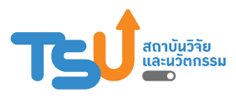
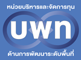

🎓 การประชุมวิชาการระดับชาติ มหาวิทยาลัยทักษิณ ครั้งที่ 37 ประจำปี 2569
การวิเคราะห์โครงสร้างรายได้ของครัวเรือนไทยในปี 2566 ด้วยเทคนิคการเล่าเรื่องด้วยข้อมูลร่วมกับการประยุกต์ใช้โมเดลภาษาขนาดใหญ่
Analysis of Income Structure of Thai Households in 2023 Using Data Storytelling Techniques and Thai Large Language Model Application (Typhoon AI)
🐍 Python · Pandas · Plotly · Matplotlib
🤖 Typhoon2.5-Qwen3-4B · 4-bit NF4 Quantization
🔍 Hybrid RAG · BGE-M3 + BM25 + RRF + Reranker
📊 NSO 2566 · 7,700 → 6,829 แถว · 77 จังหวัด
⚡ BERTScore F1 = 0.7928 · Kaggle T4 GPU
📄 บทคัดย่อ (Abstract)
การศึกษานี้มีวัตถุประสงค์เพื่อวิเคราะห์โครงสร้างและความแตกต่างของรายได้ครัวเรือนไทย ปี พ.ศ. 2566
โดยใช้ข้อมูลแบบเปิดจากสำนักงานสถิติแห่งชาติ (NSO) 7,700 แถว ครอบคลุม 77 จังหวัด และ 4 กลุ่มสถานะเศรษฐกิจสังคม
ระเบียบวิธีวิจัยประกอบด้วย (1) การวิเคราะห์ข้อมูลเชิงสำรวจ (EDA) ร่วมกับ Data Storytelling ด้วย Python (Pandas, Matplotlib, Plotly)
และ (2) การพัฒนาแอปพลิเคชัน AI ด้วยสถาปัตยกรรม RAG บนโมเดล Typhoon2.5-Qwen3-4B (4-bit NF4 Quantization)
เพื่อสนับสนุนการวิเคราะห์และตอบคำถามเชิงนโยบาย
ผลการศึกษาพบว่า รายได้เฉลี่ย 26,279 บาท/เดือน มัธยฐาน 25,395 บาท
กลุ่มผู้จัดการ/นักวิชาการมีรายได้สูงสุด 48,293 บาท (+84%)
ขณะที่คนงานเกษตรต่ำสุด 15,804 บาท (−40%) ช่องว่าง 3.1 เท่า
จังหวัดจันทบุรีมี CV สูงสุด (0.957) และระบบ AI บรรลุ BERTScore F1 = 0.7928
แสดงศักยภาพในการสนับสนุนการตัดสินใจเชิงหลักฐาน
#ความเหลื่อมล้ำรายได้
#DataStorytelling
#TyphoonAI
#HybridRAG
#นโยบายสาธารณะ
#EDA
#OpenData
🔍 บทนำ (Introduction)
ความแตกต่างของรายได้เป็นปัญหาเชิงโครงสร้างที่สำคัญของระบบเศรษฐกิจไทย
ซึ่งส่งผลกระทบต่อคุณภาพชีวิต ความมั่นคงทางสังคม และการบรรลุ SDGs
แม้ประเทศไทยมีการเติบโตทางเศรษฐกิจต่อเนื่อง แต่ผลประโยชน์ยังกระจายไม่เท่าเทียม
โดยเฉพาะระหว่างกลุ่มอาชีพและพื้นที่ภูมิภาค (World Bank, 2023)
วิกฤตโควิด-19 ซ้ำเติมแรงงานนอกระบบและเกษตรกร
ข้อมูลโครงสร้างรายได้เฉลี่ยของครัวเรือนไทยในปี 2566 ครอบคลุม 77 จังหวัด 4 กลุ่มสถานะเศรษฐกิจหลัก ซึ่งใช้สำหรับวิเคราะห์โครงสร้างและความแตกต่างของค่าเฉลี่ยรายได้ครัวเรือนไทย
ข้อมูลโครงสร้างรายได้เฉลี่ยของครัวเรือนไทยในปี 2566 ครอบคลุม 77 จังหวัด 4 กลุ่มสถานะเศรษฐกิจหลัก ซึ่งใช้สำหรับวิเคราะห์โครงสร้างและความแตกต่างของค่าเฉลี่ยรายได้ครัวเรือนไทย
💡 วัตถุประสงค์งานวิจัย 3 ข้อ:
(1) วิเคราะห์โครงสร้างและความแตกต่างของค่าเฉลี่ยรายได้ครัวเรือนไทย ปี 2566
(2) พัฒนาแนวทาง Data Storytelling ที่สื่อสารได้มีประสิทธิภาพ
(3) ประเมินศักยภาพระบบ AI (Typhoon AI) ในการสนับสนุนการวิเคราะห์เชิงนโยบาย
(1) วิเคราะห์โครงสร้างและความแตกต่างของค่าเฉลี่ยรายได้ครัวเรือนไทย ปี 2566
(2) พัฒนาแนวทาง Data Storytelling ที่สื่อสารได้มีประสิทธิภาพ
(3) ประเมินศักยภาพระบบ AI (Typhoon AI) ในการสนับสนุนการวิเคราะห์เชิงนโยบาย

ภาพที่ 1: Distribution Analysis & KPI รายได้ครัวเรือนไทย ปี 2566
⚙️ กระบวนการวิจัย (Methodology)
📂 NSO Data7,700 แถว
→
🧹 Data Cleaning6,829 แถว
→
📊 EDA &
Storytelling14 ภาพ
→
Storytelling14 ภาพ
🔍 RAG
IndexKB 6,829 docs
→
IndexKB 6,829 docs
🤖 Typhoon AI
ChatbotGradio UI
ChatbotGradio UI
📋 Data Cleaning Log — 5 ขั้นตอน
1
ตรวจสอบและลบ Duplicate rows 0 แถว — ไม่พบแถวซ้ำ
2
จัดการค่า Null ในคอลัมน์สำคัญ 0 แถว
3
แปลง dtype + coerce NaN ในตัวแปรรายได้ 0 แถว
4
ลบแถว value ≤ 0 −871 แถว → คงเหลือ 6,829 แถว
5
กรอง attribute — ใช้ข้อมูลทั้งหมด 0 แถว
- 1แหล่งข้อมูล: NSO ปี 2566 (data.go.th) 7,700 แถว → หลัง Cleaning คงเหลือ 6,829 แถว · 11 คอลัมน์ · 77 จังหวัด · 4 กลุ่มหลัก · 10 กลุ่มย่อย
- 2Data Storytelling: EDA ด้วย Python (Pandas, NumPy, Plotly) สร้าง 14 ภาพ Visualization — Cleveland Dot Plot, Boxplot, Diverging Bar, Treemap, Heatmap, Sankey, Vulnerability Plot
- 3Hybrid RAG Architecture: BGE-M3 (Dense Vector) + BM25 (Sparse) + 3-way Reciprocal Rank Fusion (RRF) + bge-reranker-v2-m3 (Cross-encoder) → Knowledge Base 6,829 documents
- 4LLM: typhoon-ai/typhoon2.5-qwen3-4b (Decoder-only, Qwen3-4B Instruct) ประมวลผล 4-bit NF4 Quantization บน Kaggle T4 GPU (VRAM 15 GB) ผ่าน Gradio Web UI
- 5การประเมิน: ชุดคำถาม 7 ข้อ ครอบคลุมประเด็นนโยบาย วัดด้วย BERTScore F1 = 0.7928 เฉลี่ย <10 วินาที/คำถาม

ภาพที่ 2: รายได้เฉลี่ยต่อเดือนของครัวเรือน จำแนกตามกลุ่มอาชีพ

ภาพที่ 3: Distribution รายได้ครัวเรือนตามกลุ่มอาชีพ
📊 ผลงานสร้างสรรค์ (Visual Insights)

ภาพที่ 4: ช่องว่างรายได้ระหว่างกลุ่มอาชีพ จำแนกตามผู้ประกอบการ

ภาพที่ 5: รายได้เฉลี่ยและมัธยฐานรายจังหวัด

ภาพที่ 6: Treemap รายได้ครัวเรือน จำแนกตามภูมิภาคและจังหวัด
💰 KPI ภาพรวมรายได้ครัวเรือนไทย ปี 2566
26,279
บาท/เดือน · ค่าเฉลี่ย (Mean)
25,395
บาท/เดือน · มัธยฐาน (P50)
3.1×
Gap อาชีพ สูงสุด-ต่ำสุด
50,893
สูงสุด (จังหวัด จันทบุรี)
17,456
ต่ำสุด (จังหวัด นราธิวาส)
0.7928
BERTScore F1 (AI System)
📈 Percentile Distribution (บาท/เดือน) — 6,829 แถว
P10
21,335 บาท
P25
22,823 บาท
P50
25,395 บาท ← มัธยฐาน
P75
28,779 บาท
P90
33,187 บาท
P99
41,423 บาท
MAX
181,322 บาท (กลุ่มย่อย)
💡 ค่าเฉลี่ย (26,279 ฿) > มัธยฐาน (25,395 ฿) สะท้อนการกระจายแบบเบ้ขวา (Right-skewed)
เจ้าของกิจการ ≥5 คน: รายได้เฉลี่ยสูงสุด 71,543 บาท/เดือน (ภายในกลุ่มธุรกิจตนเอง)
P90/P10 Ratio: ≈ 1.55 เท่า แสดงความแตกต่างระดับปานกลางระหว่างกลุ่มจังหวัด
เจ้าของกิจการ ≥5 คน: รายได้เฉลี่ยสูงสุด 71,543 บาท/เดือน (ภายในกลุ่มธุรกิจตนเอง)
P90/P10 Ratio: ≈ 1.55 เท่า แสดงความแตกต่างระดับปานกลางระหว่างกลุ่มจังหวัด
👥 Q1: ใครได้รับค่าตอบแทนเท่าใด? ช่องว่างอยู่ที่ไหน?

ภาพที่ 7: % รายได้เทียบค่าเฉลี่ยประเทศ กลุ่มอาชีพ (Diverging Bar)
| # | กลุ่มอาชีพ | เฉลี่ย (฿) | % เทียบประเทศ | n |
|---|---|---|---|---|
| 1 | ผู้จัดการ นักวิชาการ และผู้ปฏิบัติงานวิชาชีพ | +84% | 77 | |
| 2 | ผู้ประกอบธุรกิจตนเองที่ไม่ใช่การเกษตร | +27% | 77 | |
| 3 | ปลูกพืช/เลี้ยงสัตว์ — ส่วนใหญ่เช่าที่ดิน | +12% | 63 | |
| 4 | ปลูกพืช/เลี้ยงสัตว์ — เจ้าของที่ดิน | +5% | 76 | |
| 5 | เสมียน พนักงานขาย และให้บริการ | −2% | 77 | |
| 6 | ผู้ปฏิบัติงานกระบวนการผลิต ก่อสร้าง | −16% | 77 | |
| 7 | ประมง ป่าไม้ ล่าสัตว์ บริการทางเกษตร | −18% | 70 | |
| 8 | ผู้ไม่ได้ปฏิบัติงานเชิงเศรษฐกิจ | −26% | 77 | |
| 9 | คนงานด้านการขนส่งและงานพื้นฐาน | −29% | 77 | |
| 10 | คนงานเกษตร ป่าไม้ และประมง | −40% | 73 |
📌 Key Insight Q1: ช่องว่างค่าตอบแทน 3.1 เท่า ระหว่างกลุ่มอาชีพ
สอดคล้องกับ Human Capital Theory (Becker, 1964) — ทักษะ/การศึกษาสูง ค่าตอบแทนสูง
เจ้าของกิจการ ≥5 คน: มีรายได้ 71,543 ฿ (ดึงค่าเฉลี่ยกลุ่มธุรกิจตนเองขึ้น)
🎯 นโยบาย: Upskilling ภาคเกษตร + ค่าแรงขั้นต่ำที่เหมาะสม + Social Safety Net
สอดคล้องกับ Human Capital Theory (Becker, 1964) — ทักษะ/การศึกษาสูง ค่าตอบแทนสูง
เจ้าของกิจการ ≥5 คน: มีรายได้ 71,543 ฿ (ดึงค่าเฉลี่ยกลุ่มธุรกิจตนเองขึ้น)
🎯 นโยบาย: Upskilling ภาคเกษตร + ค่าแรงขั้นต่ำที่เหมาะสม + Social Safety Net
📍 Q2: ความแตกต่างของรายได้อยู่พื้นที่ใด?

ภาพที่ 8: Inequality Matrix — รายได้เฉลี่ย vs CV รายจังหวัด(ขนาดจุด = จำนวนข้อมูล)

ภาพที่ 9: การกระจายรายได้ครัวเรือนจำแนกตามภูมิภาค
| # | จังหวัด | เฉลี่ย (฿) | CV (%) | Max/Min | ลักษณะ |
|---|---|---|---|---|---|
| 1 | จันทบุรี | 50,893 | 95.7% | 10.0× | รายได้สูง+CV สูง |
| 2 | หนองบัวลำภู | 28,815 | 79.8% | 7.0× | ปานกลาง |
| 3 | ศรีสะเกษ | 28,973 | 79.7% | 6.7× | ปานกลาง |
| 4 | ยโสธร | 26,460 | 76.0% | 5.2× | |
| 5 | นราธิวาส | 17,456 | 73.6% | 6.9× | รายได้ต่ำ+CV สูง |
นราธิวาส
17,456 ฿/เดือน
ต่ำกว่าเฉลี่ย 33.6%จันทบุรี
50,893 ฿/เดือน
CV = 95.7% (Max)แม่ฮ่องสอน
18,950 ฿/เดือน
CV = 68.2%
🔍 Key Insight Q2: รายได้สูงไม่ตรงกับความเหลื่อมล้ำต่ำ
จังหวัดรายได้ต่ำ: นราธิวาส · เชียงราย (17,462 ฿) · พะเยา (18,627 ฿) · ขอนแก่น (18,939 ฿)
กระจุกตัว EEC + กทม. ขณะที่ชายแดนใต้-เหนือตอนบน ยังล้าหลัง
🎯 นโยบาย: SEZ + โครงสร้างพื้นฐานพื้นที่รายได้ต่ำ
จังหวัดรายได้ต่ำ: นราธิวาส · เชียงราย (17,462 ฿) · พะเยา (18,627 ฿) · ขอนแก่น (18,939 ฿)
กระจุกตัว EEC + กทม. ขณะที่ชายแดนใต้-เหนือตอนบน ยังล้าหลัง
🎯 นโยบาย: SEZ + โครงสร้างพื้นฐานพื้นที่รายได้ต่ำ
📊 Q3: โครงสร้างรายได้ & ความเปราะบาง

ภาพที่ 10: สัดส่วนรายได้ทั้งสิ้น ประจำ และไม่ประจำ ตามกลุ่มอาชีพ

ภาพที่ 11: Vulnerability — สัดส่วนรายได้ไม่ประจำต่อรายได้รวม
| กลุ่มหลัก | รายได้ทั้งสิ้น (%) | รายได้ประจำ (%) | ไม่ประจำ (%) | ความเสี่ยง |
|---|---|---|---|---|
| ผู้ถือครองทำการเกษตร | 70.8% | 28.5% | 0.7% | ⚠️ สูง |
| ผู้ประกอบธุรกิจตนเอง | 73.0% | 26.3% | 0.7% | ปานกลาง |
| ผู้ไม่ได้ปฏิบัติงานเชิงเศรษฐกิจ | 72.6% | 24.3% | 3.1% | ⚠️ สูง |
| ลูกจ้าง | 71.7% | 27.7% | 0.6% | ✅ ต่ำ |
🔹 ค้นพบสำคัญ: ทุกกลุ่มอาชีพพึ่งพารายได้ประจำ 98.4–99.8% ของรายได้รวม
รายได้ไม่ประจำต่ำมาก (<3.1%) ขัดกับสมมติฐานเริ่มแรก
รายได้ไม่ประจำในที่นี้คือ เงินช่วยเหลือ เงินโอน ของขวัญ หรือรายได้พิเศษ ไม่ใช่รายได้หลัก

ภาพที่ 12: Sankey Diagram — กระแสรายได้จากกลุ่มอาชีพสู่แหล่งรายได้
⚠️ Key Insight Q3: กลุ่มเปราะบาง: เกษตรกรผู้เช่าที่ดิน · คนงานเกษตร · ประมง
รายได้ผันผวนตามฤดูกาล ไม่มีสวัสดิการ ขาดหลักประกัน
🎯 นโยบาย: สร้างหลักประกันรายได้สำหรับแรงงานนอกระบบ · ประกันรายได้เกษตรกร · Cooperative Farming
รายได้ผันผวนตามฤดูกาล ไม่มีสวัสดิการ ขาดหลักประกัน
🎯 นโยบาย: สร้างหลักประกันรายได้สำหรับแรงงานนอกระบบ · ประกันรายได้เกษตรกร · Cooperative Farming
🤖 การประเมินระบบ AI (Typhoon AI + Hybrid RAG)
ระบบ AI (Typhoon2.5-Qwen3-4b + Hybrid RAG) โหลดโมเดลบน T4 GPU ใช้ VRAM ≈3.5 GB สามารถตอบคำถามทั้ง 7 ข้อได้ถูกต้อง รวดเร็ว (<10 วินาที/คำถาม) ดึงหลักฐานจาก Knowledge Base 6,829 เอกสาร:
❓ กลุ่มอาชีพใดมีรายได้เฉลี่ยสูงสุด?
✅ ผู้จัดการ/นักวิชาการ 48,293 บาท/เดือน รองลงมาผู้ประกอบธุรกิจตนเอง 33,299 บาท (ถูกต้อง)
❓ จังหวัดใดมีความแตกต่างของรายได้สูงสุด?
✅ จันทบุรี CV = 0.957 (ถูกต้อง)
❓ นโยบายลดความเหลื่อมล้ำภาคเกษตรทำอย่างไรได้บ้าง?
✅ (1) สนับสนุนรายได้โดยตรง (เงินช่วยเหลือ/สินเชื่อดอกเบี้ยต่ำ) (2) ประกันรายได้เกษตรกร (3) Cooperative Farming (ถูกต้อง สอดคล้องเศรษฐศาสตร์สวัสดิการ)
🌟 BERTScore F1 = 0.7928 — โมเดลรักษาความหมายเนื้อหาระดับสูง เหมาะกับงานวิเคราะห์เชิงนโยบาย
⚠️ ข้อจำกัด: คำถามนอกบริบท (เช่น นโยบายเฉพาะจังหวัด ข้อมูลประวัติศาสตร์) อาจคลาดเคลื่อน
→ ควรมี Human-in-the-Loop + Citation ประกอบทุกครั้ง BERTScore F1 = 0.7928
⚠️ ข้อจำกัด: คำถามนอกบริบท (เช่น นโยบายเฉพาะจังหวัด ข้อมูลประวัติศาสตร์) อาจคลาดเคลื่อน
→ ควรมี Human-in-the-Loop + Citation ประกอบทุกครั้ง BERTScore F1 = 0.7928
📌 บทสรุป & ข้อเสนอแนะ (Conclusion)
สรุปผล 4 ประเด็นหลัก:
(1) ช่องว่างรายได้ระหว่างกลุ่มอาชีพ 3.1 เท่า — ผู้จัดการ/นักวิชาการ (48,293 ฿) vs คนงานเกษตร (15,804 ฿) สะท้อนบทบาท Human Capital + โครงสร้างตลาดแรงงาน
(2) จังหวัดจันทบุรี CV สูงสุด (0.957) ขณะที่ภาคเหนือ ภาคอีสาน ภาคใต้ชายแดนมีรายได้ต่ำ — รายได้สูงไม่ตรงกับ CV ต่ำ
(3) ทุกกลุ่มพึ่งพารายได้ประจำ 98.4–99.8% — นโยบายควรเน้นสร้างหลักประกันรายได้ประจำมากกว่าลดรายได้ไม่ประจำ
(4) ระบบ AI (Typhoon + RAG) ลดภาระนักวิเคราะห์ เพิ่มการเข้าถึงข้อมูลเชิงลึกสำหรับผู้กำหนดนโยบาย
(2) จังหวัดจันทบุรี CV สูงสุด (0.957) ขณะที่ภาคเหนือ ภาคอีสาน ภาคใต้ชายแดนมีรายได้ต่ำ — รายได้สูงไม่ตรงกับ CV ต่ำ
(3) ทุกกลุ่มพึ่งพารายได้ประจำ 98.4–99.8% — นโยบายควรเน้นสร้างหลักประกันรายได้ประจำมากกว่าลดรายได้ไม่ประจำ
(4) ระบบ AI (Typhoon + RAG) ลดภาระนักวิเคราะห์ เพิ่มการเข้าถึงข้อมูลเชิงลึกสำหรับผู้กำหนดนโยบาย
ข้อเสนอแนะเชิงนโยบาย 4 ข้อ:
1) ยกระดับรายได้กลุ่มล่างผ่าน Upskilling + ค่าแรงขั้นต่ำ ที่เหมาะสม
2) กระจายการลงทุนสู่จังหวัดรายได้ต่ำ (ภาคใต้ชายแดน · ภาคเหนือตอนบน)
3) สร้าง หลักประกันรายได้ สำหรับเกษตรกรและแรงงานอิสระ
4) พัฒนาระบบ Real-time Monitoring + AI Causal Inference ระยะยาว
1) ยกระดับรายได้กลุ่มล่างผ่าน Upskilling + ค่าแรงขั้นต่ำ ที่เหมาะสม
2) กระจายการลงทุนสู่จังหวัดรายได้ต่ำ (ภาคใต้ชายแดน · ภาคเหนือตอนบน)
3) สร้าง หลักประกันรายได้ สำหรับเกษตรกรและแรงงานอิสระ
4) พัฒนาระบบ Real-time Monitoring + AI Causal Inference ระยะยาว
📚 บรรณานุกรม (References)
[1] Becker, G. S. (1964). Human capital. NBER.
[2] Lewis, P., et al. (2020). Retrieval-Augmented Generation for Knowledge-Intensive NLP Tasks. NeurIPS 33, 9459–9474.
[3] McKinney, W. (2011). pandas: A foundational Python library for data analysis. Python for High Performance and Scientific Computing, 14(9), 1–9.
[4] Plotly Technologies Inc. (2015). Collaborative data science. https://plot.ly
[5] Typhoon AI. (2025). typhoon2.5-qwen3-4b. HuggingFace. https://huggingface.co/typhoon-ai
[6] World Bank. (2023). Thailand economic monitor: Equity and inclusion. World Bank Group.
[7] Zhang, T. et al. (2020). BERTScore: Evaluating text generation with BERT. ICLR 2020.
[8] ธนาคารแห่งประเทศไทย. (2566). รายงานเศรษฐกิจและการเงิน ปี 2566.
[9] สำนักงานสถิติแห่งชาติ. (2566). ข้อมูลรายได้เฉลี่ยต่อเดือนของครัวเรือนในประเทศไทย. https://data.go.th/dataset/os_08_00007
[10] ปริสุทธิ์ จิตต์ภักดี. (2569). Data Storytelling การใช้ประโยชน์จากข้อมูล Open Data. BDI.
[2] Lewis, P., et al. (2020). Retrieval-Augmented Generation for Knowledge-Intensive NLP Tasks. NeurIPS 33, 9459–9474.
[3] McKinney, W. (2011). pandas: A foundational Python library for data analysis. Python for High Performance and Scientific Computing, 14(9), 1–9.
[4] Plotly Technologies Inc. (2015). Collaborative data science. https://plot.ly
[5] Typhoon AI. (2025). typhoon2.5-qwen3-4b. HuggingFace. https://huggingface.co/typhoon-ai
[6] World Bank. (2023). Thailand economic monitor: Equity and inclusion. World Bank Group.
[7] Zhang, T. et al. (2020). BERTScore: Evaluating text generation with BERT. ICLR 2020.
[8] ธนาคารแห่งประเทศไทย. (2566). รายงานเศรษฐกิจและการเงิน ปี 2566.
[9] สำนักงานสถิติแห่งชาติ. (2566). ข้อมูลรายได้เฉลี่ยต่อเดือนของครัวเรือนในประเทศไทย. https://data.go.th/dataset/os_08_00007
[10] ปริสุทธิ์ จิตต์ภักดี. (2569). Data Storytelling การใช้ประโยชน์จากข้อมูล Open Data. BDI.